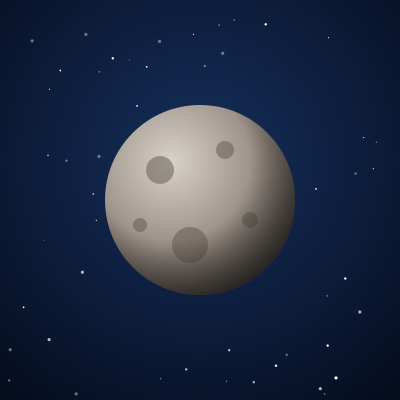
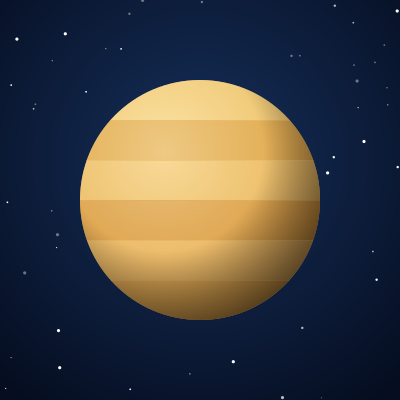
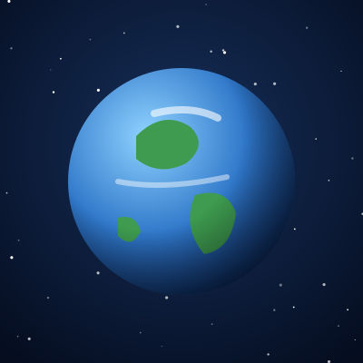
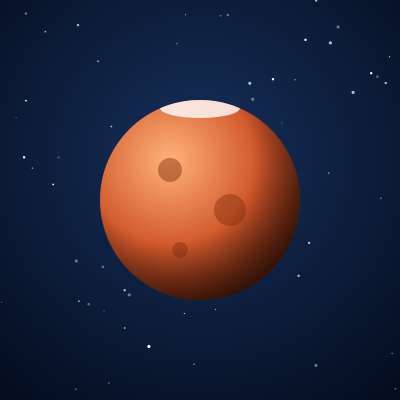
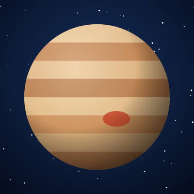
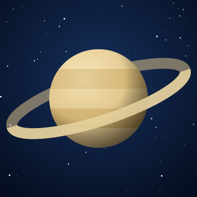
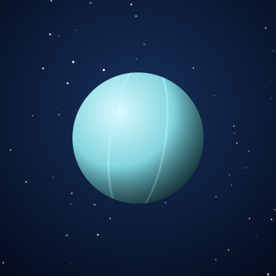
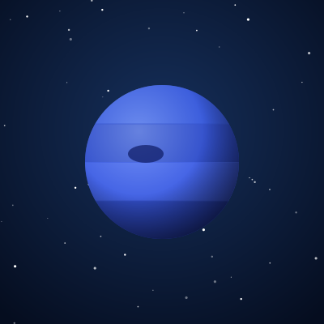

Mercúrio
O menor planeta e o mais próximo do Sol. Os dias chegam a cerca de 430 °C e as noites caem a quase −180 °C.
Ver dadosOs oito planetas do Sistema Solar em cartões.
8 planeta(s) exibido(s)

O menor planeta e o mais próximo do Sol. Os dias chegam a cerca de 430 °C e as noites caem a quase −180 °C.
Ver dados
O planeta mais quente, com cerca de 465 °C por causa do intenso efeito estufa. Gira no sentido contrário ao da maioria.
Ver dados
Nosso lar e o único mundo conhecido com vida. Cerca de 71% da superfície é coberta por água líquida.
Ver dados
O Planeta Vermelho abriga o Olympus Mons, o maior vulcão conhecido do Sistema Solar, com cerca de 22 km de altura.
Ver dados
O gigante do Sistema Solar tem massa maior que a de todos os outros planetas somados e uma tempestade secular.
Ver dados
Famoso pelos anéis de gelo e rocha, é tão pouco denso que, em teoria, flutuaria na água.
Ver dados
Gigante de gelo que gira praticamente deitado, com o eixo inclinado cerca de 98° em relação à órbita.
Ver dados
O mais distante dos planetas tem os ventos mais rápidos, que ultrapassam 2.000 km/h.
Ver dados